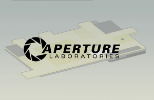

Overview
Aperture Science, Inc is a United States-based scientific research corporation appearing as the main antagonistic organization in Portal and Portal 2, as well as its logo on the Borealis in Half-Life 2: Episode Two. The main facility is the Aperture Science Enrichment Center, located in Upper Michigan, with at least one other base of operations in Cleveland, Ohio. Originally a shower curtain manufacturer named Aperture Fixtures, it evolved over the course of half a century into an experimental physics research institution and a bitter rival of Black Mesa.
Aperture Laboratories is also used as a trade name by Aperture Science for most of its products, as Aperture Science dba Aperture Laboratories. Aperture Science Innovators was the trade name used before the 1970s.
Cave Johnson era
In the late 1940's, Aperture Fixtures was founded by Cave Johnson as a shower curtain manufacturer (The name "Aperture Fixtures" was chosen "to make the curtains appear more hygienic"). Johnson renamed the company "Aperture Science Innovators" in 1947, also for the same purpose of making the curtains appear more hygienic.
Early work on the Aperture Science Handheld Portal Device began; the early version, called the Aperture Science Portable Quantum Tunneling Device, proved to be too bulky for effective use, while poor surface conductors for the portals often caused mangling or death of the test subjects when they tried to use the portals. Repulsion Gel was first developed around this time as well for use as a diet supplement. At first only the brightest and best of society were chosen for testing (such as Astronauts, Olympians, and War Heroes) but after being connected to a string of astronaut disappearances in 1968, Aperture Science focused on recruiting homeless people for testing, starting in 1972. Cave suspects Black Mesa of industrial espionage on the company's products, and blames them for Aperture's bankruptcy. (Propulsion Gel was released around this time too.)
Aperture Science owned a research ship, named Borealis, housing an unknown technology. It disappeared, took a chunk of its dry dock with it and soon became a legend amongst the scientific community. Debate raged between Eli Vance and Isaac Kleiner over whether the technology within should be destroyed or used. Kleiner said he felt that the power could be used to destroy the Combine, but Eli fears of another Black Mesa Incident and objects to this.